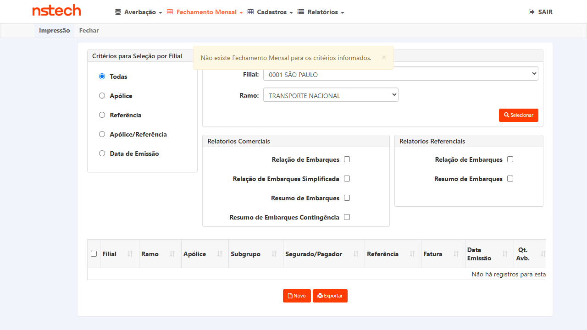
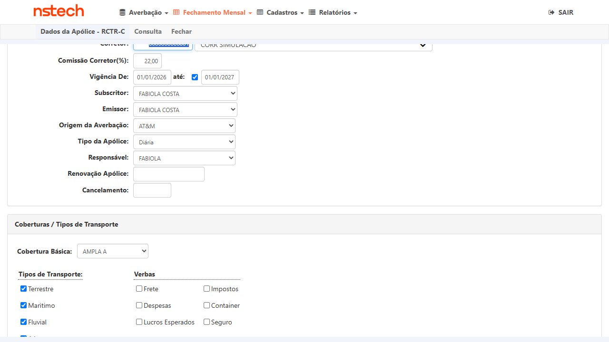
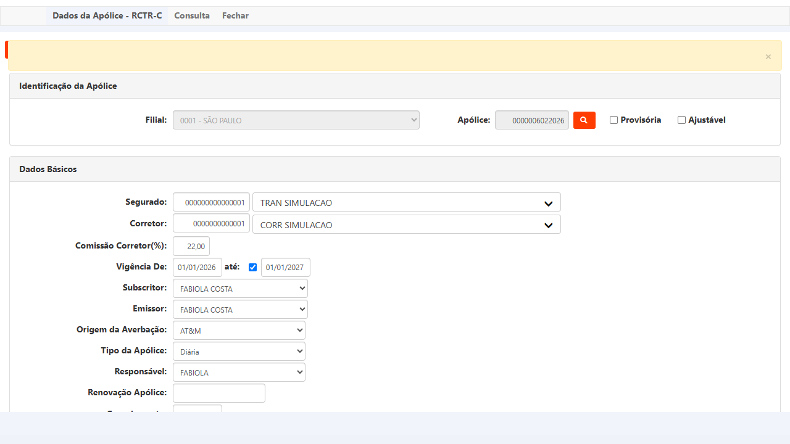
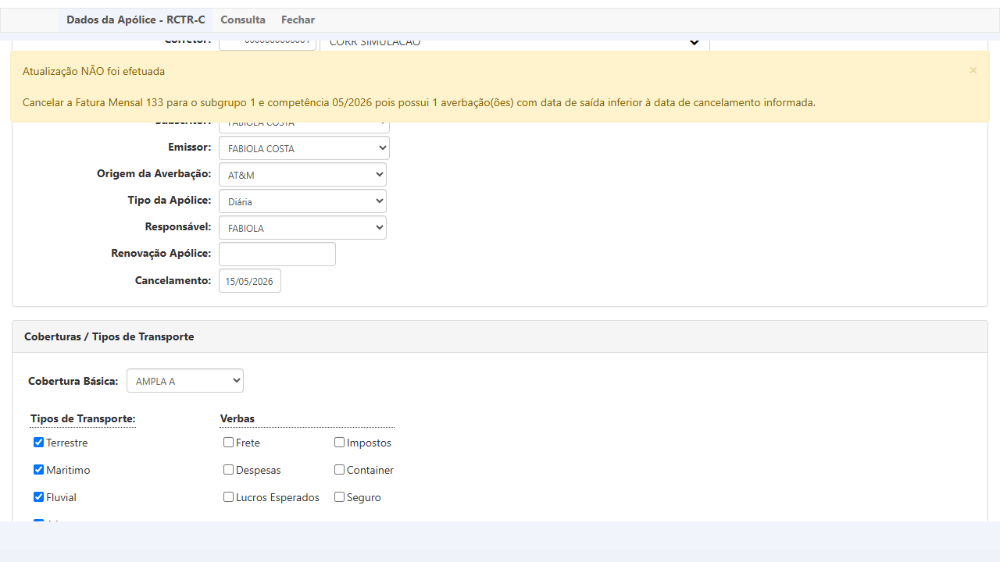
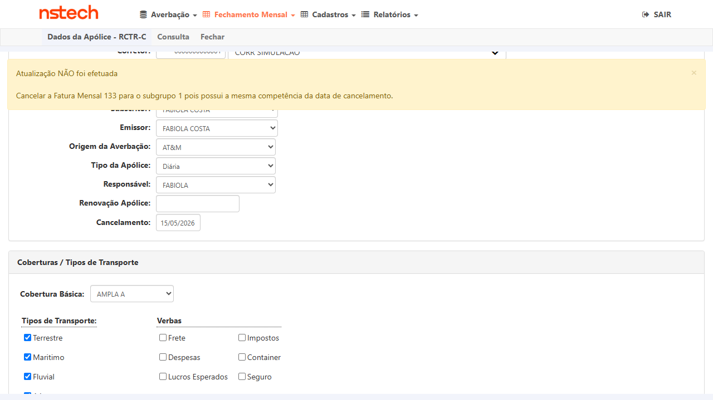
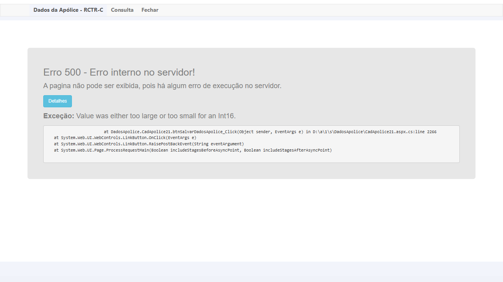

Contexto e Escopo
Fix: A regra de 24h para cancelamento de apólice foi estendida ao fluxo de cancelamento, permitindo que o sistema aceite cancelamento no último dia do mês mesmo quando existe fatura fechada para a mesma competência.
Apólice de teste:
Fatura comprovada: Fatura
Apólice de teste:
0000006022026 — Ramo 21, Filial 0001 SÃO PAULO, Segurado TRAN SIMULACAO, Vigência 01/01/2026–01/01/2027, Tipo Diária.Fatura comprovada: Fatura
133, competência 05/2026, emitida em 08/06/2026. Evidenciada via Impressão → Fechamento Mensal. Junho/2026 não possui fatura (confirmado).
Evidência de Massa — Fatura 05/2026

Impressão Fechamento Mensal: Fatura 133, competência 05/2026, apólice 0000006022026

Junho/2026 — Ramo 21: "Não há registros" — confirma que só existe fatura de maio

Apólice 0000006022026 carregada em DadosApolice — dados completos confirmados
Casos de Teste
CT-6719-003 — Regra 1: Cancelar em mês anterior ao da fatura
CT-6719-003
Cancelamento em 30/04/2026 com fatura em 05/2026 → deve BLOQUEAR
P1
PASS
Objetivo
Verificar que o sistema bloqueia o cancelamento quando a data informada é anterior ao mês de uma fatura fechada — o sistema deve exigir o cancelamento da fatura do mês posterior antes de prosseguir.
Pré-condições
- CITWEB KOVR HML — usuário
ROT_AUTO / T7Jjm6xF - Apólice
0000006022026, Ramo 21, Filial 0001 - Fatura 133 existente para competência 05/2026 (confirmada via Impressão)
- Junho/2026 sem fatura (confirmado — apenas maio)
Passos executados
- Login CITWEB KOVR HML
- Menu Fechamento Mensal → Impressão: buscar Ramo 21, Filial 0001, Mês 05/2026 — confirmar Fatura 133 da apólice 0000006022026
- Navegar para Dados da Apólice → pesquisar apólice
6022026, Filial 0001, Ramo 21 - Tela DadosApolice: confirmar dados carregados (Segurado TRAN SIMULACAO, Vigência 01/01/2026–01/01/2027)
- Preencher campo Cancelamento com
30/04/2026(mês anterior à fatura 05/2026) - Clicar em Atualizar
✅ PASS — Sistema exibiu: "Atualização NÃO foi efetuada — Cancelar a Fatura Mensal 133 para o subgrupo 1 e competência 05/2026 pois possui 1 averbação(ões) com data de saída inferior à data de cancelamento informada."
Cancelamento bloqueado corretamente. O campo não foi salvo.
Cancelamento bloqueado corretamente. O campo não foi salvo.
Evidências

01 — Apólice carregada, campo Cancelamento vazio

02 — Campo Cancelamento preenchido: 30/04/2026

03 — Sistema bloqueou: "Cancelar Fatura 133 competência 05/2026..."
CT-6719-002 — Regra 2: Cancelar em dia não-último do mesmo mês da fatura
CT-6719-002
Cancelamento em 15/05/2026 com fatura em 05/2026 → deve BLOQUEAR/ALERTAR
P1
PASS
Objetivo
Verificar que o sistema alerta/bloqueia cancelamento quando a data informada está no mesmo mês de uma fatura fechada, mas NÃO é o último dia do mês. Esta regra distingue o cenário do fix (último dia) do cenário inválido (dia intermediário).
Pré-condições
- Mesma apólice
0000006022026, Fatura 133 em 05/2026 - Data de cancelamento a testar: 15/05/2026 (dia 15 de maio — não é último dia do mês)
Passos executados
- Apólice 0000006022026 já carregada na tela DadosApolice
- Alterar campo Cancelamento para
15/05/2026 - Clicar em Atualizar
✅ PASS — Sistema exibiu: "Atualização NÃO foi efetuada — Cancelar a Fatura Mensal 133 para o subgrupo 1 pois possui a mesma competência da data de cancelamento."
Sistema identificou corretamente que a data está no mesmo mês da fatura e bloqueou o cancelamento.
Sistema identificou corretamente que a data está no mesmo mês da fatura e bloqueou o cancelamento.
Evidências

01 — Campo Cancelamento preenchido: 15/05/2026

02 — Bloqueio: "mesma competência da data de cancelamento" — campo 15/05/2026 visível
CT-6719-001 — Fix: Cancelar no último dia do mês com fatura existente
CT-6719-001
Cancelamento em 31/05/2026 (último dia) com fatura em 05/2026 → deve PERMITIR
P1
FAIL
Objetivo
Verificar que o fix do PBI-6719 permite cancelamento no último dia do mês (31/05/2026) mesmo quando existe fatura fechada para a mesma competência (05/2026). Antes do fix, o sistema bloqueava também este cenário.
Pré-condições
- Mesma apólice
0000006022026, Fatura 133 em 05/2026 - Data de cancelamento a testar: 31/05/2026 (último dia de maio)
- Resultado esperado: sistema ACEITA e salva o cancelamento
Passos executados
- Apólice 0000006022026 na tela DadosApolice
- Preencher campo Cancelamento com
31/05/2026 - Clicar em Atualizar
❌ FAIL — Erro 500 interno no servidor
Exceção:
Stack:
O fix removeu o bloqueio de validação para o último dia do mês, porém ao tentar prosseguir com o salvamento ocorre overflow de Int16 no servidor. O cancelamento não é salvo.
Bug identificado: Possível overflow de variável Int16 ao calcular competência do último dia do mês (dia 31) em
Exceção:
Value was either too large or too small for an Int16.Stack:
DadosApolice.CadApolice21.btnSalvarDadosApolice_Click in CadApolice21.aspx.cs:line 2266O fix removeu o bloqueio de validação para o último dia do mês, porém ao tentar prosseguir com o salvamento ocorre overflow de Int16 no servidor. O cancelamento não é salvo.
Bug identificado: Possível overflow de variável Int16 ao calcular competência do último dia do mês (dia 31) em
CadApolice21.aspx.cs:2266.
Evidências

01 — Campo Cancelamento preenchido: 31/05/2026

02 — Erro 500: "Erro interno no servidor"

03 — Detalhes: Int16 overflow em CadApolice21.aspx.cs:2266
Resumo dos Achados
✅ CT-6719-003 (Regra 1) — PASS: Sistema bloqueia corretamente cancelamento em mês anterior ao da fatura com mensagem específica referenciando a fatura e competência.
✅ CT-6719-002 (Regra 2) — PASS: Sistema bloqueia corretamente cancelamento em dia intermediário do mesmo mês da fatura com mensagem de "mesma competência".
❌ CT-6719-001 (Fix) — FAIL: Fix removeu o bloqueio para último dia do mês, porém ao tentar salvar ocorre Erro 500 (Int16 overflow em CadApolice21.aspx.cs:2266). Bug precisa ser corrigido antes da aprovação do PBI.
⚠️ Nota sobre a apólice de teste: A apólice utilizada (0000006022026) é do tipo Diária. Considerar também testar com apólice do tipo Mensal para garantir que o comportamento se mantém. O overflow pode ser específico ao tipo Diária + último dia do mês.